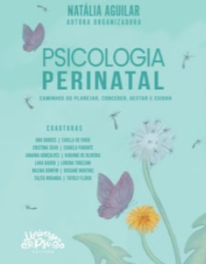

Livro Psicologia Perinatal
Caminhos do Planejar, Conceber, Gestar e Cuidar
Para quem é?
Mamães, gestantes, profissionais da saúde e todos que desejam compreender a importância da Psicologia Perinatal na jornada materna.
O que você vai encontrar?
- Informações e reflexões sobre a saúde mental materna.
- O impacto da gestação e do puerpério na vida da mulher.
- Capítulo especial sobre Desmame Gentil e Abordagem Psicológica.